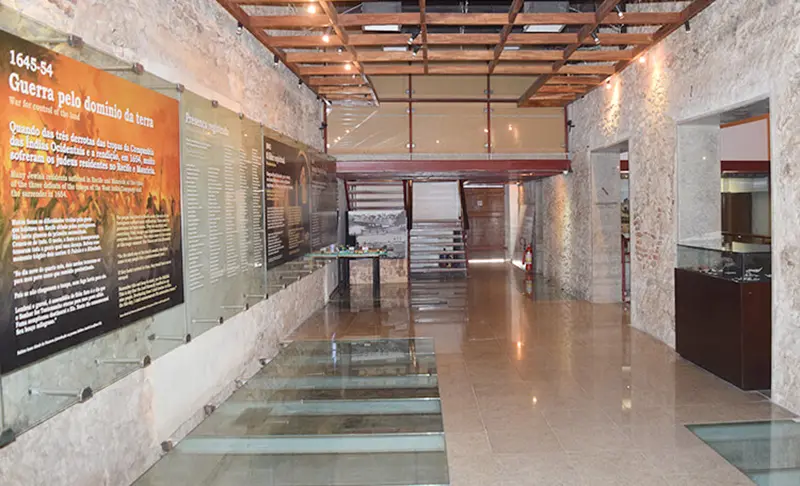

Central Cultural Judaicos
A sinagoga Kahal Zur Israel foi fundada no século 17 durante a ocupação holandesa no Recife. Atualmente, o espaço é sede do Centro Cultural Judaico de Pernambuco. O visitante pode conferir escavações arqueológicas, exposições fixas e temporárias e inúmeros documentos do povo judeu. O espaço funciona na Rua Bom Jesus (é outro ponto turístico que falo abaixo), bem pertinho do Marco Zero. Dá para ir a pé tranquilamente. É uma ótima oportunidade para conhecer esse povo que ajudou a construir o que Recife é hoje.